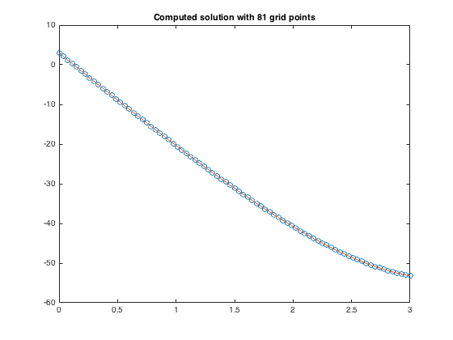
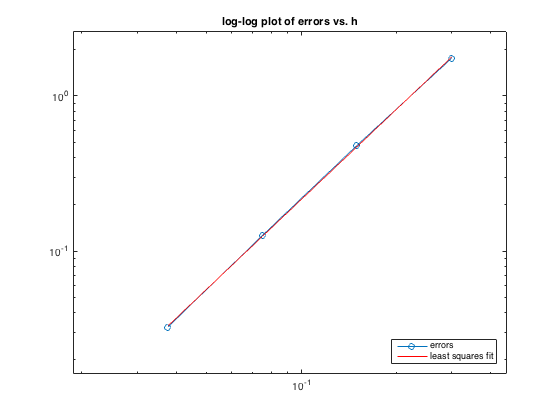
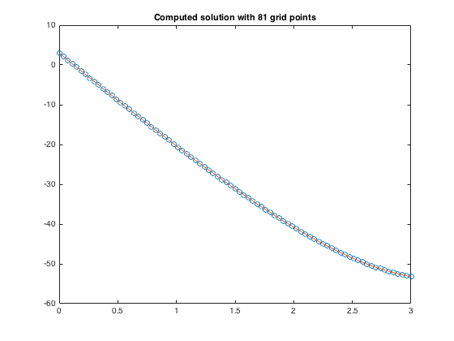
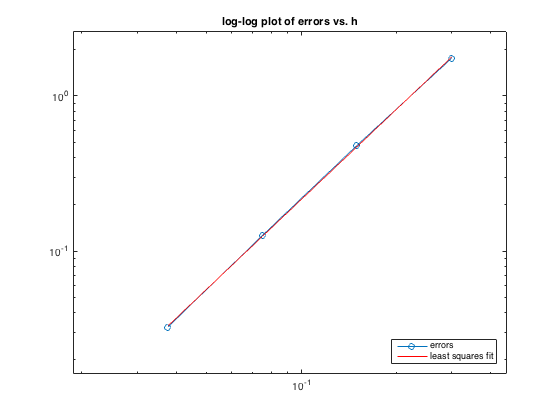

% % bvp_2.m % second order finite difference method for the bvp % u''(x) = f(x), u'(ax)=sigma, u(bx)=beta % Using 3-pt differences on an arbitrary nonuniform grid. % Should be 2nd order accurate if grid points vary smoothly, but may % degenerate to "first order" on random or nonsmooth grids. % % Different BCs can be specified by changing the first and/or last rows of % A and F. % % From http://www.amath.washington.edu/~rjl/fdmbook/ (2007) % ** modified ax = 0; bx = 3; sigma = -5; % Dirichlet boundary condition at ax alpha = 3; % Neumann boundary condtion at bx f = @(x) exp(x); % right hand side function *modified utrue = @(x) exp(x) + (sigma-exp(bx))*(x) + alpha - exp(ax); % true soln % true solution on fine grid for plotting: xfine = linspace(ax,bx,101); ufine = utrue(xfine); % Solve the problem for ntest different grid sizes to test convergence: m1vals = [10 20 40 80]; ntest = length(m1vals); hvals = zeros(ntest,1); % to hold h values E = zeros(ntest,1); % to hold errors for jtest=1:ntest m1 = m1vals(jtest); m2 = m1 + 1; m = m1 - 1; % number of interior grid points hvals(jtest) = (bx-ax)/m1; % average grid spacing, for convergence tests % set grid points: gridchoice = 'uniform'; % see xgrid.m for other choices x = xgrid(ax,bx,m,gridchoice); % set up matrix A (using sparse matrix storage): A = spalloc(m2,m2,3*m2); % initialize to zero matrix % first row for Dirichlet BC at ax: *modified A(1,1:3) = fdcoeffF(0, x(1), x(1:3)); % interior rows: for i=2:m1 A(i,i-1:i+1) = fdcoeffF(2, x(i), x((i-1):(i+1))); end % last row for Nuemann BC at bx: *modified A(m2,m:m2) = fdcoeffF(1,x(m2),x(m:m2)); % Right hand side: F = f(x); F(1) = alpha; % **modified F(m2) = sigma; % solve linear system: U = A\F; % compute error at grid points: uhat = utrue(x); err = U - uhat; E(jtest) = max(abs(err)); disp(' ') disp(sprintf('Error with %i points is %9.5e',m2,E(jtest))) clf figure(i) plot(x,U,'o') % plot computed solution title(sprintf('Computed solution with %i grid points',m2)); hold on plot(xfine,ufine) % plot true solution hold off % pause to see this plot: drawnow %input('Hit <return> to continue '); end error_table(hvals, E); % print tables of errors and ratios figure(2) error_loglog(hvals, E); % produce log-log plot of errors and least squares fit
Error with 11 points is 1.74886e+00
Error with 21 points is 4.80811e-01
Error with 41 points is 1.26086e-01
Error with 81 points is 3.22858e-02
h error ratio observed order
0.30000 1.74886e+00 NaN NaN
0.15000 4.80811e-01 3.63732 1.86288
0.07500 1.26086e-01 3.81336 1.93106
0.03750 3.22858e-02 3.90531 1.96544
Least squares fit gives E(h) = 18.0049 * h^1.92092
  
 